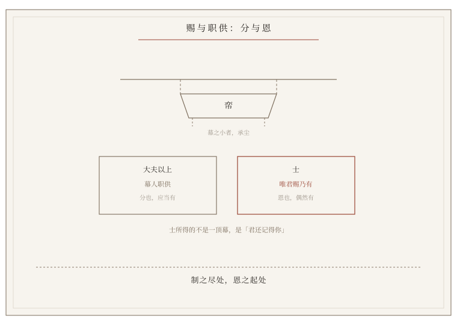

檀弓上 · 三·一百二十二 · 第 325 课
君于士有赐帟。
说什么事：帟是承尘的小幕。大夫以上，丧时由幕人供给；士本无，除非君赐。
落在哪一层：以「有」之来源量恩。论「职供是分，赐是恩」。
为何编在此位：此课收卷八。前面论棺、椁、殡、踊，皆「制」；此处一件小事，是「恩」。卷八收在恩上。
【经】君於士有賜帟。
【注】帟，幕之小者，所以承塵，賜之則張於殯上。大夫以上，幕人職供焉。
【疏】赐，惠赐也。帟者，幕之小者也。大夫以上丧，则幕人职供之也；士唯有君恩赐之，乃得有帟也。
帟 音亦。幕之小者，覆于上以承尘。
承尘 承接落尘。张于柩上，使尘不落。
殡上 柩在殡之处，即殡宫。
幕人 《周礼》天官之属，掌帷幕幄帟绶之事。
职供 以职分供给，不待请、不待赐。
君对于士，有赐帟之礼。帟张在殡上以承尘；大夫以上由幕人按职供给，士则须君赐才有。
一节只此六字，注疏亦短。但它立了一条极清楚的界：同一件东西，来源不同，意义不同。
大夫以上：幕人职供——这是「分」，应当有。士：唯君赐乃有——这是「恩」，偶然有。
所以士所得的不是一顶幕，是「君还记得你」。
第一层 帟之用：不让尘落在柩上 注「所以承尘，赐之则张于殡上」。一顶小幕，功用极具体：尘不落柩。
礼的器物，多是这样：不是因为好看，是因为有一件必做的事。凡物皆有其职，职尽则礼成。
第二层 「职供」与「赐」：分与恩 大夫以上是「职供」，幕人按职分供给，不问君记不记得；士是「赐」，君记起才有。
一个是制度，一个是情分。制度可以问「该不该」，情分只能问「记不记得」。把情分当制度去争，则情分亡；把制度当情分去等，则制度废。
第三层 「士」的位置 士在最下。礼制到士为止：士以上有等，士以下无等。故士之所得，一半靠制，一半靠恩。
这一句其实在说：礼制有尽头，尽头之外靠人情补。这不是礼的漏洞，是礼的自知——它知道自己管不到那么细。
第四层 卷八收在「赐」 卷八自「公叔文子」一路下来，论的多是「制」：棺几重、殡几道、位几班、踊几步。至此忽然收在一个「赐」字。
制有等，恩无等。以制收卷，则严；以恩收卷，则温。编者以此收卷八，是很高的收法：先让你看尽等差，最后给你一件不按等差的东西。
与今日何干 今人办事，常问「该不该有」。此节提醒：有的来自制度，有的来自情分。制度之有无可争，情分之有无不可争——争之即亡。
| 左 | 右 |
|---|---|
| 帟 | 幕之小者 |
| 承尘 | 其用 |
| 张于殡上 | 其位 |
| 大夫以上 | 幕人职供，分也 |
| 士 | 唯赐乃有，恩也 |
| 赐 | 惠赐 |
| 六字 | 制之尽处，恩之起处 |
画一处殡宫之内，视点平视。上方悬一顶小幕，四角以细绳系于梁，幕下垂而微张，幕下正对一具柩（素帷覆之）。幕之左侧空处，只余两根未系的绳（示「本无」）。不画人、不写文字。赭色只用在小幕四角的系绳各一道。
